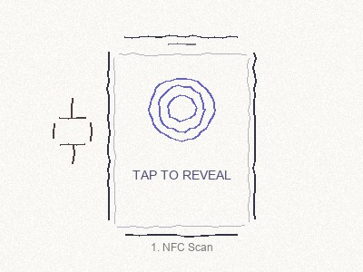
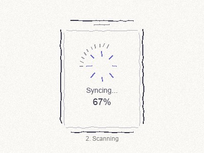
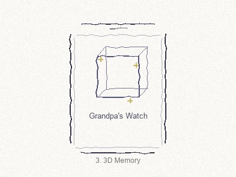
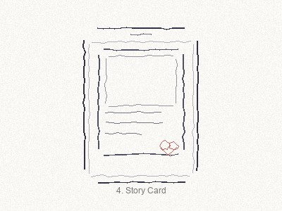
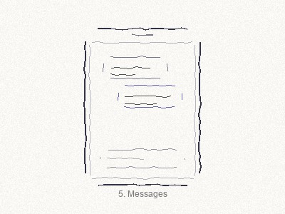
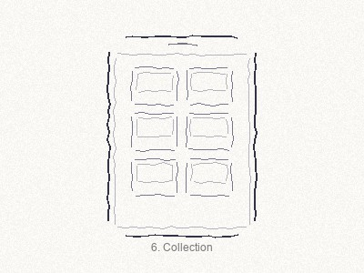
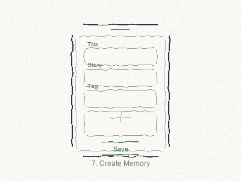
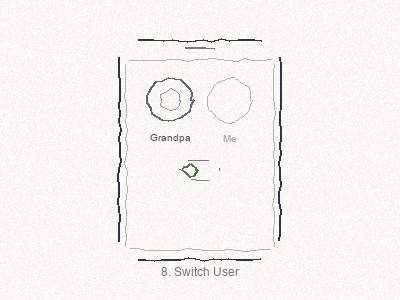
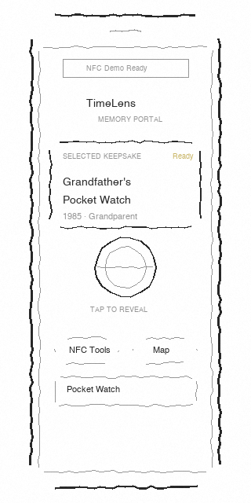
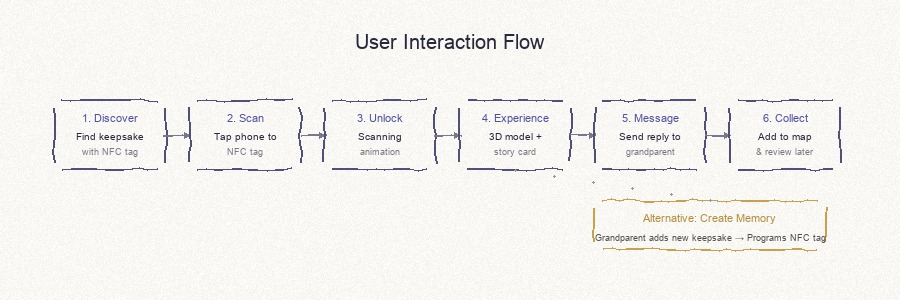

Design Process
From ideation to final design
🎨 Design Principles
1. Tangible First
Interaction starts from a real keepsake and an NFC touch rather than a menu. Physical objects trigger digital experiences.
2. Playful Discovery
A 3D reveal makes family history feel discoverable and playful, not archival and boring.
3. Reciprocal Exchange
Supports two-way communication instead of one-way archiving. Both generations can participate.
4. Lightweight & Accessible
Simple, intuitive interface that works for both tech-savvy grandchildren and less tech-comfortable grandparents.
Crazy 8s Sketches
Rapid ideation - 8 sketches in 8 minutes
✏️ 8 Quick Concepts
These 8 sketches explore different aspects of the TimeLens experience, from NFC scanning to memory creation and user settings.








These 8 sketches explore the core interaction flow from tangible input (NFC scan) to digital output (3D memory visualization). Key insights: (1) The "unlock" metaphor creates excitement, (2) 3D visualization bridges generations, (3) Messages enable two-way dialogue.
Design Alternatives
Comparing 3 different approaches and our final choice
🔀 Three Design Directions
We explored three different approaches to solve the intergenerational memory sharing problem.
| Design | Description | Pros | Cons | Decision |
|---|---|---|---|---|
| 方案A Digital Archive |
Traditional family tree + text-based story archive | • Simple to implement • Structured data |
• Boring for children • One-way communication • Feels like homework |
Not Selected |
| 方案B Video Stories |
Record grandparents telling stories on video | • Authentic emotion • Rich media |
• High production effort • Editing complexity • Grandparents camera-shy |
Not Selected |
| 方案C Tangible NFC + 3D |
Physical object scan → 3D visualization → Messages | • Playful & engaging • Cross-gen friendly • Real object anchor |
• Requires NFC hardware • 3D performance concerns |
SELECTED |
✅ Why We Chose Option C
1. Tangible Interaction
B4-1 emphasizes tangible interfaces. NFC tags on physical objects create a magical "unlock" experience that bridges physical and digital.
2. Playful Discovery
The 3D reveal feels like opening a treasure chest, making family history exciting rather than boring.
3. Two-Way Communication
Unlike archives or videos, TimeLens allows grandchildren to respond, creating ongoing dialogue.
4. Accessible to Both Ages
Simple tap interaction works for grandparents; 3D visuals appeal to grandchildren.
Low-Fi Prototypes
Wireframes and early interface concepts
📱 Mobile Wireframes

10:19.5 aspect ratio optimized for mobile screens
🔄 Interaction Flow

Complete user journey from NFC tap to memory collection
📝 Design Iterations
How our design evolved through feedback and testing.
Iteration 1: Archive-First
Initially designed as a digital archive with folders and categories. Users found it too similar to existing file management systems and lacked emotional connection.
"Feels like Dropbox for family photos." — Testing participant
Iteration 2: Tangible-First
Pivoted to NFC-triggered experiences. Added 3D visualization and messaging. Testing showed much higher engagement from both age groups.
"My grandson immediately wanted to tap everything!" — Grandparent tester